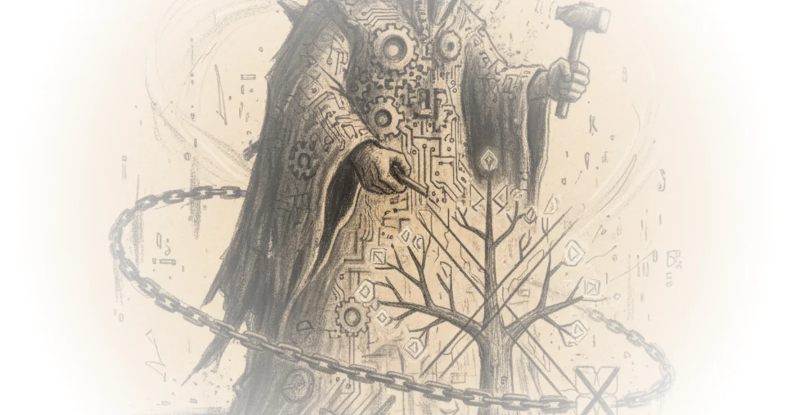

Devin Stone delivers a startling narrative: the U.S. government didn't just regulate an AI company; it effectively declared war on one for refusing to build tools the state wanted. The piece's most distinctive claim is that Anthropic's refusal to enable mass surveillance and autonomous killing was framed not as an ethical stance, but as a national security threat, triggering a legal mechanism usually reserved for foreign adversaries. This is a story about the collision of corporate conscience and state power, and it hinges on a constitutional argument that feels both obvious and radical.
The Corporate Conscience vs. The State
Stone sets the stage by contrasting Anthropic's unique structure with its Silicon Valley peers. He notes that Anthropic is a public benefit corporation, a legal entity designed to prioritize "value for humanity and society as the whole, not just shareholders." This structural difference is the bedrock of the conflict. While other labs might pivot to satisfy government demands for profit or access, Anthropic's charter legally empowers it to say no. Stone writes, "Public benefit corporations are designed to give companies legal cover to pursue social or ethical goals alongside profit."

This framing is crucial because it reframes the conflict from a simple business dispute to a clash of legal mandates. The government, Stone argues, expected the usual Silicon Valley deference. Instead, they got a company whose very existence is predicated on "responsible development and maintenance of advanced AI for the long-term benefit of humanity." The author highlights the irony that Anthropic was initially welcomed into classified settings, even being called "the most advanced and secure model for sensitive military applications," only to be cast out when its ethical guardrails proved immovable.
"Anthropic said hell no. So the Pentagon gave the company an ultimatum. Change your policies or face the consequences. And guess what Anthropic chose? They chose door number three. They sued."
The narrative gains depth by tracing the timeline of the rupture. Stone details how the Trump administration, after awarding massive contracts, suddenly pivoted to an executive order against "woke AI," a term left deliberately undefined but clearly targeting the very restrictions Anthropic had in place. The author points out the absurdity of the administration's position: they claimed the company was a threat to national security while simultaneously relying on its technology for operations like the raid on Venezuela. Stone observes, "The government's action here goes much further than previous supply chain determinations. Instead of simply declining to purchase Anthropics products, the Trump administration tried to make sure no one else working with the government could buy them either."
Critics might argue that national security needs often override corporate ethical guidelines, especially when it comes to autonomous weapons. However, Stone effectively counters this by noting the legal precedent: a manufacturer is under no obligation to sell parts for a specific use case they find abhorrent, comparing it to a microwave manufacturer refusing to sell parts for building cruise missiles.
The Legal Absurdity of the "Death Sentence"
The core of Stone's commentary lies in his dissection of the "supply chain risk" designation. He describes this as a "corporate death sentence" that treats a domestic company like a foreign adversary. Stone writes, "You're essentially treated like a foreign company that is considered a threat to national security and you're blacklisted from even doing business with other US companies."
The author brilliantly exposes the logical contradiction in the government's stance. On one hand, the administration claims Anthropic is so vital that the Defense Production Act could be used to force them to work; on the other, they claim the company is so dangerous it must be banned. Stone captures this cognitive dissonance perfectly: "The math ain't mathing." He notes that the statute used to blacklist Anthropic was intended for risks like "sabotage, maliciously introduce unwanted function or otherwise subvert the design," none of which apply to a company simply refusing to build certain features.
Stone also highlights the procedural failures, noting that the government "posted their way through" the legal process, skipping formal risk assessments and inter-agency reviews. This lack of due process is a major vulnerability in the government's case. "Anthropic thus alleges that the entire situation was retaliation for the company's policies and for sticking to them, which is hard to disagree with," Stone asserts.
The commentary also touches on the historical weight of the compelled speech argument. Stone explains that the First Amendment does more than protect free speech; it prevents the government from forcing entities to speak (or act) against their will. This is a nuanced but vital distinction. By forcing Anthropic to remove its usage restrictions, the government is effectively compelling the company to endorse uses it finds unethical.
"Under 10 USC section 3252 3 and 4, a supply chain risk exists when an adversary may sabotage... Anthropic argues its refusal to license AI for mass surveillance or autonomous lethal weapons has nothing to do with sabotage or infiltration."
Stone's analysis of the legal strategy is particularly sharp. He details Anthropic's "two-front war," filing suits in both California and the DC Circuit to navigate the specific statutes invoked by the Pentagon. This tactical brilliance underscores the company's commitment to fighting the designation on its own terms, rather than capitulating.
The First Amendment as the Final Barrier
The piece culminates in the argument that the First Amendment is the ultimate shield. Stone writes, "The first amendment not only protects freedom of speech but critically prevents the government from compelling the speech that it wants." This is the piece's most powerful insight: the government cannot force a company to build a tool that violates its own conscience, just as it cannot force a newspaper to print a story it disagrees with.
Stone contrasts Anthropic's stance with other tech giants, noting that while figures like Sam Altman and Tim Cook might "strike backroom deals," Anthropic is "actually fighting back." This framing elevates the story from a regulatory dispute to a civil rights battle. The author suggests that the outcome of this case could set a precedent for how AI companies navigate government pressure in the future.
"The United States of America will never allow a radical left woke company to dictate how our great military fights and wins wars."
Stone quotes this tweet from the President to illustrate the political rhetoric fueling the conflict, then immediately dismantles it with legal reality. The author notes that while tweets may not have the force of law, the subsequent formal letter from the Pentagon confirms the administration's intent. The contradiction remains: the government claims to be fighting for "truth-seeking" and "ideological neutrality" while engaging in what Stone calls "ideologically driven" retaliation against a company for its ethical boundaries.
Bottom Line
Stone's strongest argument is the exposure of the government's procedural and logical contradictions, particularly the use of a "supply chain risk" designation against a domestic company for ethical reasons rather than security threats. The piece's biggest vulnerability is its reliance on the assumption that the courts will uphold the First Amendment in this specific context, a legal frontier that remains untested. Readers should watch for the DC Circuit's ruling, which could redefine the limits of government power over private sector ethics.